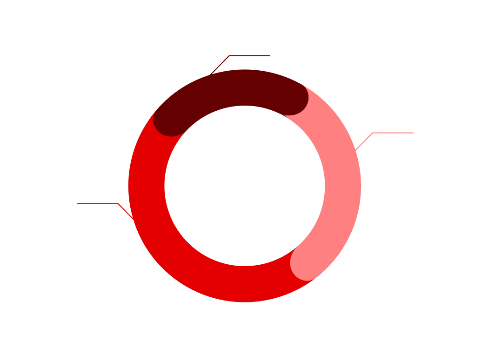
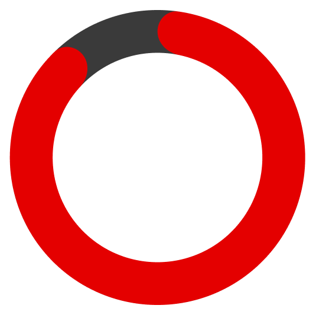
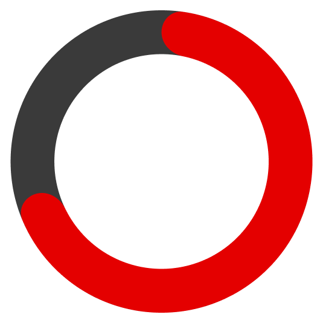
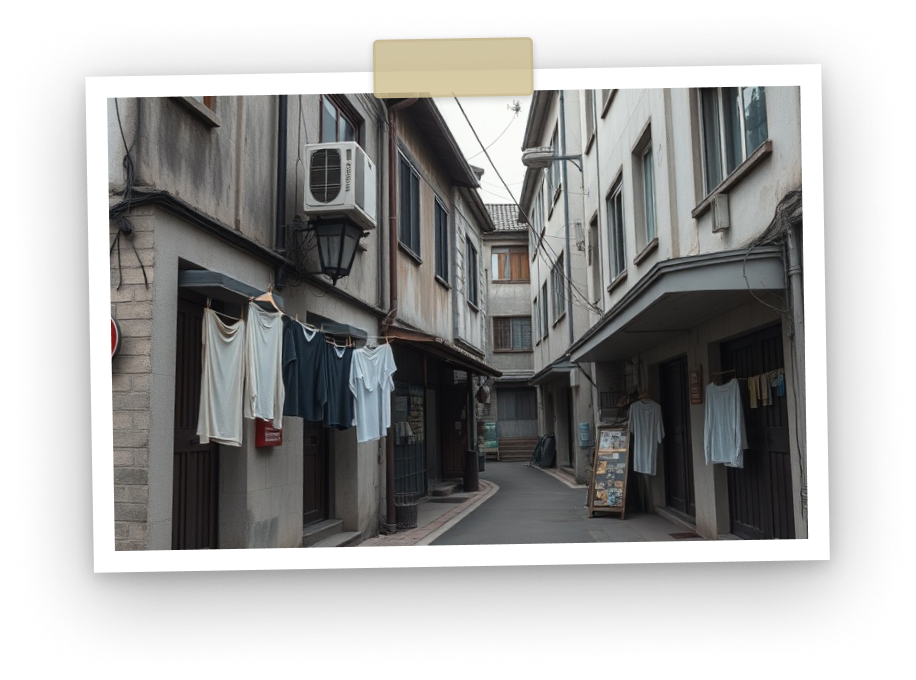
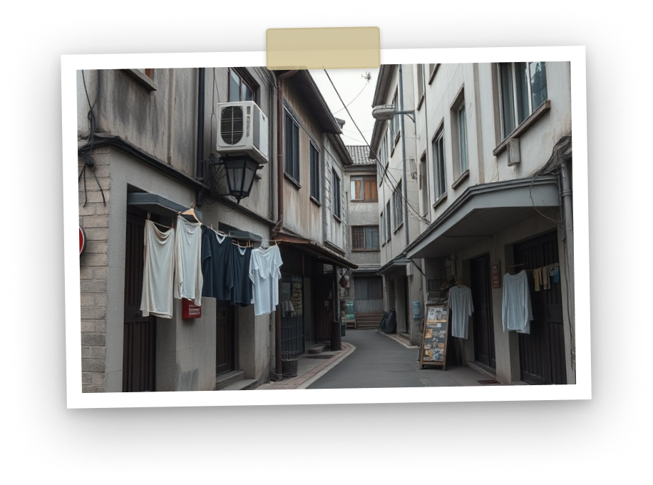

독립유공자 후손 지원 캠페인
3·1절,
그들의 오늘을 기억합니다.
어느덧 고령이 된 독립유공자 후손나라를 위해 헌신한 그 분들을 기억하며
이제는 우리가 도와야 합니다.
같은 3월 1일이지만
모두에게 같은 하루는 아닙니다.
휴식, 여행, 약속, 쇼핑.
우리는 이 하루를 보내지만
누군가는 그 하루를
여전히 버티고 있습니다.
희생과 헌신으로 다시 일군
이 땅에서
그들은 어떤 삶을 살고 있을까요?
독립유공자 후손 실태 조사 기반 데이터
-
독립 유공자 후손 평균 연령 분포

경제 활동이 힘든
독립 유공자 평균 연령50대
60대
70대 이상
*출처: 국가보훈부
-
국가 지원 체감도

독립 유공자 후손 중 국가의 지원을
제대로 받고 있다고 느끼는 비율*출처: 한국일보 기사 내 통계자료
-
독립 유공자 후손 소득 여부

독립 유공자 후손 중
별도의 소득이 없는 비율*출처: 한국일보 기사 내 통계자료
그들의 삶은 오늘도
결코 가볍지 않습니다.
3·1운동은 역사 속에 기록되었지만
그 후손의 삶은 오늘도 진행중입니다.
생활, 의료, 주거의 문제는
하루가 아니라 지속되는 시간 속에서 발생합니다.
고령의 독립 유공자 후손.
의료·주거 지원이 필요한 가구
하루하루 생활의 부담을 안고 살아가는 이들.
그 후손들은 여전히 잊혀진 채 살아가고 있습니다.”

 

여러분의 마음이
오늘의 삶을 지원합니다.
독립유공자 후손의 삶이 조금 더 안정될 수 있도록우리는 일상의 가장 필요한 부분을 함께합니다.
-
생계비 지원
생활비 부담을 덜어
하루를 버텨내는 시간이 아닌
살아가는 시간이 되도록 돕습니다. -
주거환경 개선
노후된 주거 공간을 개선하고
안전하고 편안한
생활 환경을 마련합니다. -
정서 지원
고립되지 않도록
지속적인 안부와 교류를 통해
마음까지 함께 돌봅니다.
이런 분들을 기억하고,
함께할 수 있습니다.
3·1절 하루의 기억만으로는 충분하지 않습니다. 우리가 관심을 나누고 지켜볼 때
그들의 일상은 조금 더 안정화되고
오늘을 견디는 힘이 됩니다. 독립유공자 후손과 함께하기
여러분의 소중한 회비는 독립 유공자 후손을 비롯하여
도움이 필요한 국내취약계층을 위한 국내구호캠페인 사업에 사용됩니다.
※ 본 캠페인의 내용은 실제 이야기를 바탕으로 각색하였으며,
인물들의 인권 및 개인 정보 보호를 위해 대역을 사용하였습니다.
※ 국가공헌협회의 모든 콘텐츠는 동의 없이 무단으로 사용되는 것을 금지합니다.